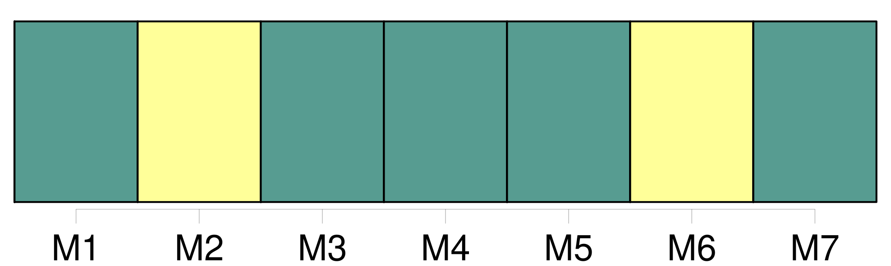

Longueur nb maillons : 20 mentions |
 |
Au sens de la présente convention, l'expression transport international s'entend de tout transport dans lequel, d'après les stipulations des parties, le point de départ et le point de destination, qu'il y ait ou non interruption de [transport] ou transbordement, sont situés soit sur le territoire de deux États parties, soit sur le territoire d'un seul État partie si une escale est prévue sur le territoire d'un autre État, même si cet État n'est pas un État partie.
[Le transport] sans une telle escale entre deux points du territoire d'un seul État partie n'est pas considéré comme international au sens de la présente convention. [13 phrases] L'emploi de tout autre moyen constatant les indications qui figurent au paragraphe 1 peut se substituer à la délivrance du titre de [transport] mentionné dans ce paragraphe. [6 phrases]
L'inobservation des dispositions des paragraphes précédents n'affecte ni l'existence ni la validité du contrat de [transport] , qui n'en sera pas moins soumis aux règles de la présente convention, y compris celles qui portent sur la limitation de la responsabilité. [19 phrases]
Article 9 [8 phrases]
La lettre de transport aérien et le récépissé de marchandises font foi, jusqu'à preuve du contraire, de la conclusion du contrat, de la réception de la marchandise et des conditions [du transport] qui y figurent. [3 phrases]
L'expéditeur a le droit, à la condition d'exécuter toutes les obligations résultant du contrat de [transport] , de disposer de la marchandise, soit en la retirant à l'aéroport de départ ou de destination, soit en l'arrêtant en cours de route lors d'un atterrissage, soit en la faisant livrer au lieu de destination ou en cours de route à une personne autre que le destinataire initialement désigné, soit en demandant son retour à l'aéroport de départ, pour autant que l'exercice de ce droit ne porte préjudice ni au transporteur, ni aux autres expéditeurs et avec l'obligation de rembourser les frais qui en résultent. [8 phrases]
Sauf lorsque l'expéditeur a exercé le droit qu'il tient de l'article 12, le destinataire a le droit, dès l'arrivée de la marchandise au point de destination, de demander au transporteur de lui livrer la marchandise contre le paiement du montant des créances et contre l'exécution des conditions de [transport] [3 phrases]
Si la perte de la marchandise est reconnue par le transporteur ou si, à l'expiration d'un délai de sept jours après qu'elle aurait dû arriver, la marchandise n'est pas arrivée, le destinataire est autorisé à faire valoir vis-à-vis du transporteur les droits résultant du contrat de [transport]
Article 14 [16 phrases]
Si le transporteur admet la perte des bagages enregistrés ou si les bagages enregistrés ne sont pas arrivés à destination dans les vingt et un jours qui suivent la date à laquelle ils auraient dû arriver, le passager est autorisé à faire valoir contre le transporteur les droits qui découlent du contrat de [transport] [61 phrases]
Article 25 [1 phrases]
Article 27 [11 phrases]
La réception des bagages enregistrés et des marchandises sans protestation par le destinataire constituera présomption, sauf preuve du contraire, que les bagages et marchandises ont été livrés en bon état et conformément au titre de [transport] ou aux indications consignées par les autres moyens visés à l'article 3, paragraphe 2, et à l'article 4, paragraphe 2. [27 phrases]
L'action en responsabilité doit être intentée, sous peine de déchéance, dans le délai de deux ans à compter de l'arrivée à destination, ou du jour où l'aéronef aurait dû arriver, ou de l'arrêt [du transport] [3 phrases]
Dans les cas de transport régis par la définition du paragraphe 3 de l'article 1, à exécuter par divers transporteurs successifs, chaque transporteur acceptant des voyageurs, des bagages ou des marchandises est soumis aux règles établies par la présente convention, et est censé être une des parties du contrat de [transport] , pour autant que ce contrat ait trait à la partie du transport effectuée sous son contrôle. [7 phrases]
Dans le cas de transport intermodal effectué en partie par air et en partie par tout autre moyen de [transport] , les dispositions de la présente convention ne s'appliquent, sous réserve du paragraphe 4 de l'article 18, qu'au transport aérien et si celui -ci répond aux conditions de l'article 1. [1 phrases]
Rien dans la présente convention n'empêche les parties, dans le cas de transport intermodal, d'insérer dans le titre de transport aérien des conditions relatives à d'autres modes de [transport] , à condition que les stipulations de la présente convention soient respectées en ce qui concerne le transport par air.
CHAPITRE V [20 phrases]
Article 51 |
|
Il est possible de télécharger la ressource sur la page Ortolang |
Si vous avez des questions ou vous voyez des erreurs, merci d'envoyer un mail à silvia.federzoni89@gmail.com |